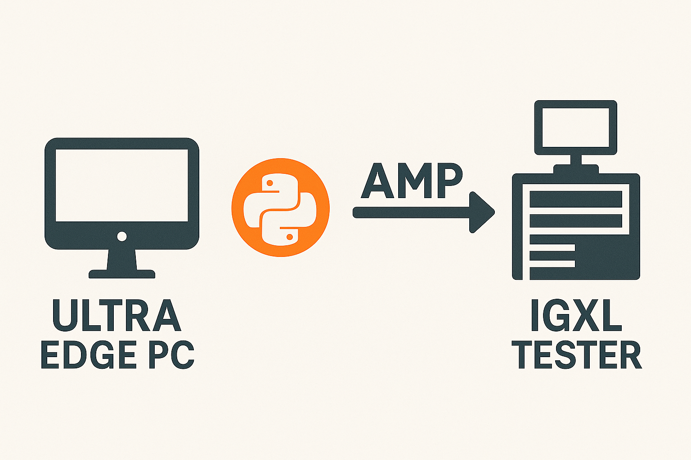

Sending AMP adaptive commands in Python
Reference : RA 465
Description
This Reference Architecture describes how to build and send AMP adaptive commands to an IGXL tester.
The code is using the Python language and is specifically adapted to an execution on the UltraEdge PC.
General Technical Info
| Component | Version |
|---|---|
| Language | Python |
| Framework | 3.11 |
| Environment | Any |
| IGXL | 10.60.02 |
Additional information about AMP adaptive testing can be found here
Source code description
Files
Disclaimer: The code provided here is a sample created to clearly show what adaptive commands look like and how to send them to the RabbitMQ host on the tester. This sample code is meant to be used as a basis to develop your own code.
AMP_adaptive_command.py
(back)
This module implements classes to easily create adaptive commands in the JSON format. It supports:
TestControlCommand: enable and disable testsEnableWordCommand: activate and deactive enable wordsUpdateLimitsCommand: update limitsClearCommand: clear previous tests enabling and update limits commands
See the API description for details.
AMP_adaptive_rmqclient.py
(back)
This module is a RabbitMQ client connecting to the RabbitMQ host located on the tester.
This code uses the module Pika as recommended on the RabbitMQ website (see this page for example)
| Parameter | Value |
|---|---|
| RabbitMQ Scheme | amqp:// |
| Network port | 5672 |
| Username | AMP-adaptive |
| Password | TER-ADAPTIVE-P4SSW0RD |
| Queue name | AMP_DAS_Queue |
| Exchange name | AMP_DAS_Exchange |
| Exchange | |
| Routing key | AMP_DAS_RoutingKey |
| Client name | AMP Python DAS |
| VHost | TER-AMP-vhost |
The main operations are:
send_action: send an adaptive command to the testeropen: setup the RabbitMQ connectionclose: closes the handles to the RabbitMQ connection
See the API description for details.
sample_code.py
(back)
This code shows how to use the AMP_Adaptive_Command and AMP_Adaptive_Client modules
to create and send adaptive commands to the tester.
In this sample, four commands are used:
- Enable and Disable tests
- Update limits using different parameters (based on test names or numbers, using limit names or numbers)
- Clear previous commands (note that clear does not apply to enable words actions)
- Enable and disable IGXL enable words